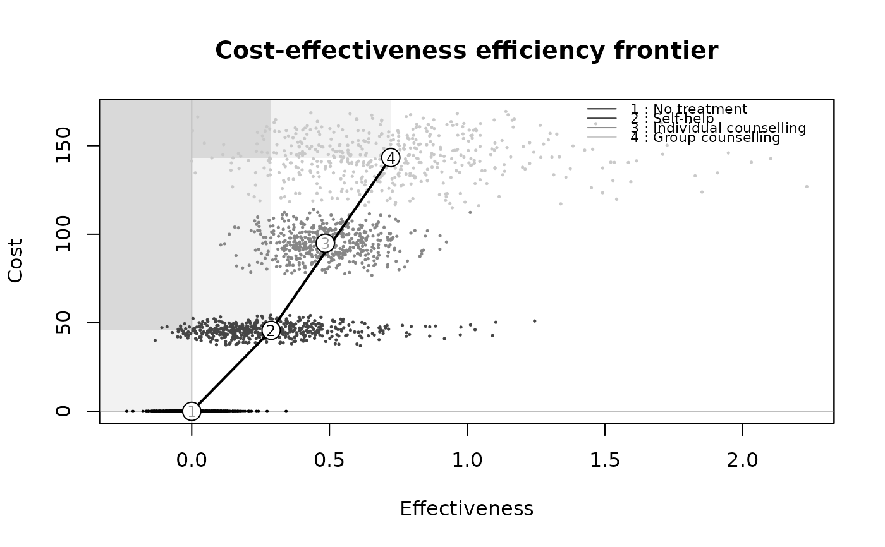
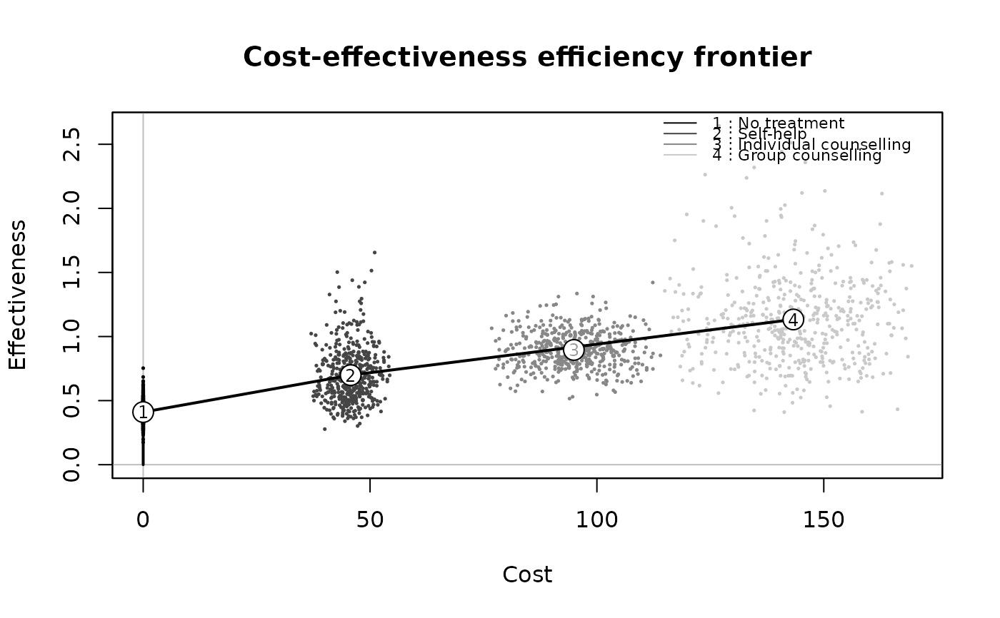
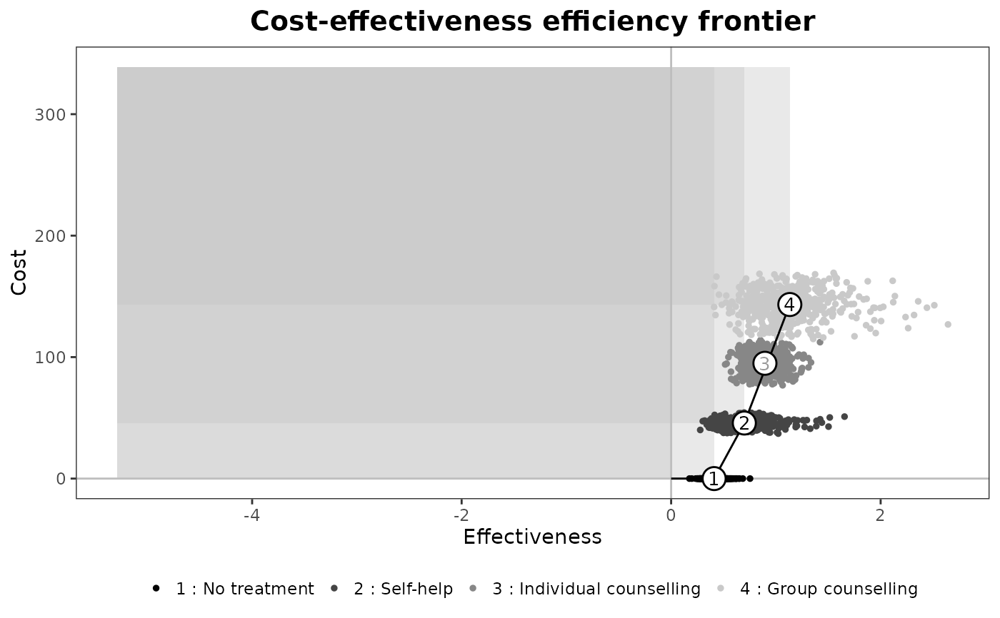

The line connecting successive points on a cost-effectiveness plane which each represent the effect and cost associated with different treatment alternatives. The gradient of a line segment represents the ICER of the treatment comparison between the two alternatives represented by that segment. The cost-effectiveness frontier consists of the set of points corresponding to treatment alternatives that are considered to be cost-effective at different values of the cost-effectiveness threshold. The steeper the gradient between successive points on the frontier, the higher is the ICER between these treatment alternatives and the more expensive alternative would be considered cost-effective only when a high value of the cost-effectiveness threshold is assumed. Points not lying on the cost-effectiveness frontier represent treatment alternatives that are not considered cost-effective at any value of the cost-effectiveness threshold.
Arguments
- he
A
bceaobject containing the results of the Bayesian modelling and the economic evaluation.- comparators
Vector specifying the comparators to be included in the frontier analysis. It must have a length > 1. Default as
NULLincludes all the available comparators.- pos
Parameter to set the position of the legend (only relevant for multiple interventions, ie more than 2 interventions being compared). Can be given in form of a string
(bottom|top)(right|left)for base graphics andbottom|top|left|rightfor ggplot2. It can be a two-elements vector, which specifies the relative position on the x and y axis respectively, or alternatively it can be in form of a logical variable, withFALSEindicating to use the default position andTRUEto place it on the bottom of the plot.- start.from.origins
Logical. Should the frontier start from the origins of the axes? The argument is reset to
FALSEif the average effectiveness and/or costs of at least one comparator are negative.- threshold
Specifies if the efficiency should be defined based on a willingness-to-pay threshold value. If set to
NULL(the default), no conditions are included on the slope increase. If a positive value is passed as argument, to be efficient an intervention also requires to have an ICER for the comparison versus the last efficient strategy not greater than the specified threshold value. A negative value will be ignored with a warning.- flip
Logical. Should the axes of the plane be inverted?
- dominance
Logical. Should the dominance regions be included in the plot?
- relative
Logical. Should the plot display the absolute measures (the default as
FALSE) or the differential outcomes versus the reference comparator?- print.summary
Logical. Should the efficiency frontier summary be printed along with the graph? See Details for additional information.
- graph
A string used to select the graphical engine to use for plotting. Should (partial-)match the two options
"base"or"ggplot2". Default value is"base".- print.plot
Logical. Should the efficiency frontier be plotted?
- ...
If
graph_type="ggplot2"and a named theme object is supplied, it will be added to the ggplot object. Ignored ifgraph_type="base". Setting the optional argumentinclude.ICERtoTRUEwill print the ICERs in the summary tables, if produced.
Value
- ceplane
A ggplot object containing the plot. Returned only if
graph_type="ggplot2".
The function produces a plot of the
cost-effectiveness efficiency frontier. The dots show the simulated values
for the intervention-specific distributions of the effectiveness and costs.
The circles indicate the average of each bivariate distribution, with the
numbers referring to each included intervention. The numbers inside the
circles are black if the intervention is included in the frontier and grey
otherwise. If the option dominance is set to TRUE, the
dominance regions are plotted, indicating the areas of dominance.
Interventions in the areas between the dominance region and the frontier are
in a situation of extended dominance.
Details
Back compatibility with BCEA previous versions:
The bcea objects did not include the generating e and c
matrices in BCEA versions <2.1-0. This function is not compatible with
objects created with previous versions. The matrices can be appended to
bcea objects obtained using previous versions, making sure that the
class of the object remains unaltered.
The argument print.summary allows for printing a brief summary of the
efficiency frontier, with default to TRUE. Two tables are plotted,
one for the interventions included in the frontier and one for the dominated
interventions. The average costs and clinical benefits are included for each
intervention. The frontier table includes the slope for the increase in the
frontier and the non-frontier table displays the dominance type of each
dominated intervention. Please note that the slopes are defined as the
increment in the costs for a unit increment in the benefits even if
flip = TRUE for consistency with the ICER definition. The angle of
increase is in radians and depends on the definition of the axes, i.e. on
the value given to the flip argument.
If the argument relative is set to TRUE, the graph will not
display the absolute measures of costs and benefits. Instead the axes will
represent differential costs and benefits compared to the reference
intervention (indexed by ref in the bcea() function).
Examples
## create the bcea object m for the smoking cessation example
data(Smoking)
m <- bcea(eff, cost, ref = 4, Kmax = 500, interventions = treats)
## produce plot
ceef.plot(m, graph = "base")
#>
#> Cost-effectiveness efficiency frontier summary
#>
#> Interventions on the efficiency frontier:
#> Effectiveness Costs Increase slope Increase angle
#> Self-help 0.28824 45.733 158.66 1.5645
#> Group counselling 0.72252 143.301 224.67 1.5663
#>
#> Interventions not on the efficiency frontier:
#> Effectiveness Costs Dominance type
#> No treatment 0.00000 0.000 Extended dominance
#> Individual counselling 0.48486 94.919 Extended dominance

# \donttest{
## tweak the options
## flip axis
ceef.plot(m,
flip = TRUE,
dominance = FALSE,
start.from.origins = FALSE,
print.summary = FALSE,
graph = "base")

## or use ggplot2 instead
if(require(ggplot2)){
ceef.plot(m,
dominance = TRUE,
start.from.origins = FALSE,
pos = TRUE,
print.summary = FALSE,
graph = "ggplot2")
}
#> Loading required package: ggplot2

# }